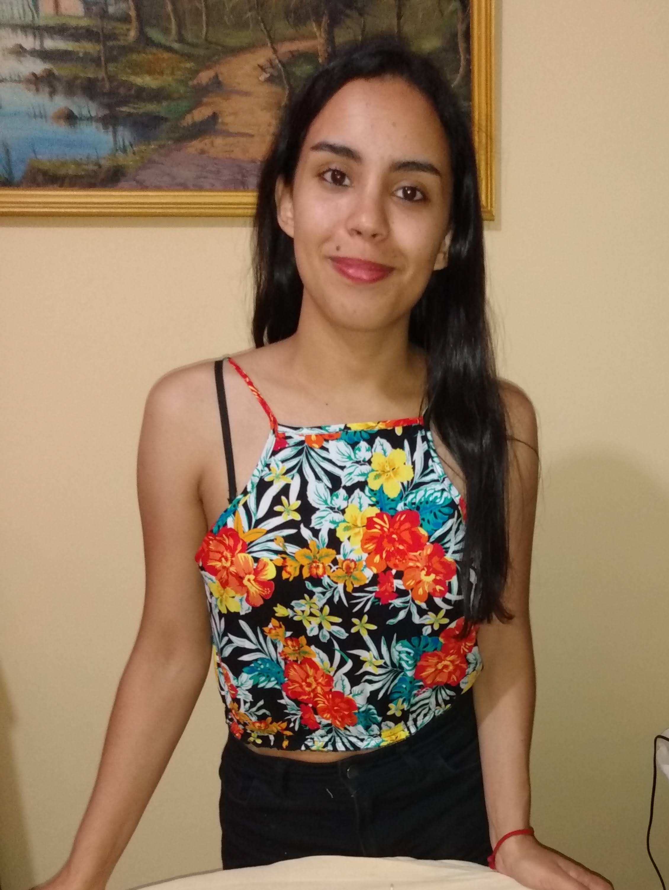

<div class="padding-all">
    <div class="container">
        <div class="row">
            <div class="col">
                
                <div class="header">
                    <h1>Burgos Rocio</h1>
              

                 <label >Repositorio proyecto</label>
                <a href="https://github.com/rocioburgos/salajuegos-22" class="link-light"> </a>

                
            </div>
            </div>
            <div class="col">
                <div class="card text-white bg-dark mb-3" style="max-width: 70rem;">
                    <!--div class="card text-white bg-dark  ">Juego propio: Simon dice
                    </div-->
                    <div class="card-body text-white"> 
                      <h5 class="card-title ">Juego propio: Simon dice</h5>
                      <p class="card-text ">
                         ¿Cómo estamos de memoria? <br> 
                         ¿Podrás recordar la secuencia de colores? <br> 
                         ¡Atrévete!<br> 
                         <br> <br> 
                        INSTRUCCIONES:<br> 
                        Simón es un juego educativo para probar el ingenio, los reflejos y la memoria.
                        
                        Un desafío permanente al azar, la habilidad y la observación.
                        A cada jugada mostrará un color nuevo que tú tendrás que repetir siempre desde el principio en el mismo orden formando una cadena de colores.
                        
                        Para ello harás clic con el ratón en el color adecuado.
                        </p>
                    </div>
                    <div class="card-footer bg-transparent border-white"> <a href="#" class="link-success">Ir al juego</a></div>
                  </div>
            </div>
        </div>
    </div>
</div>